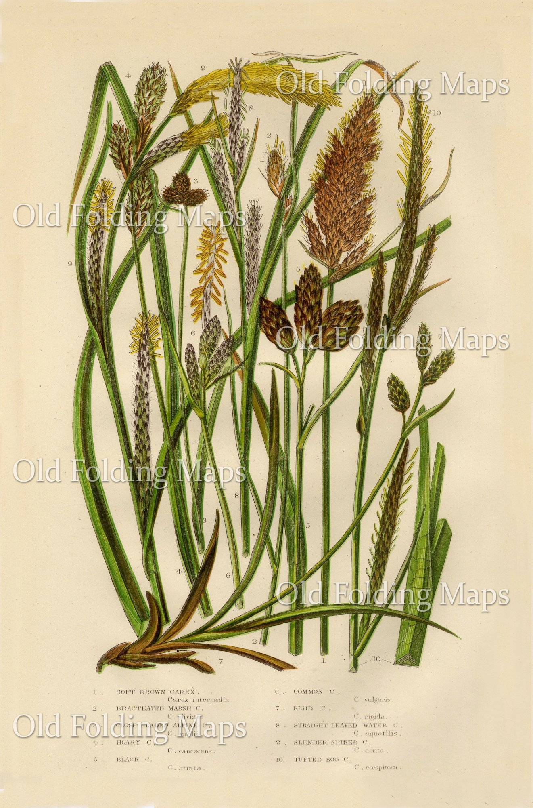
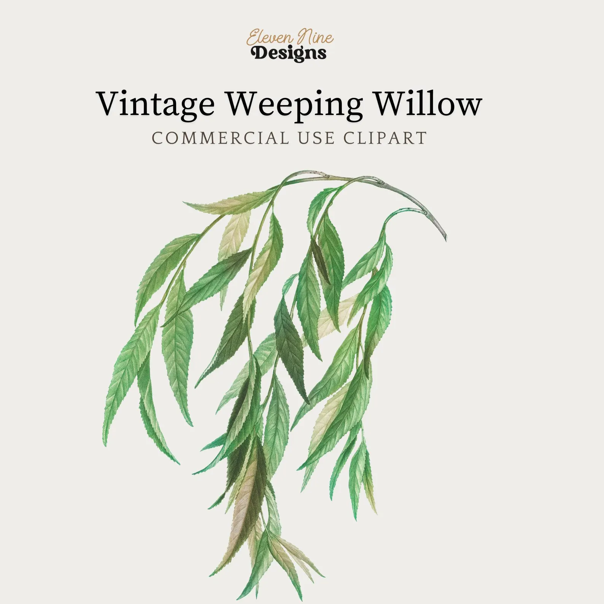
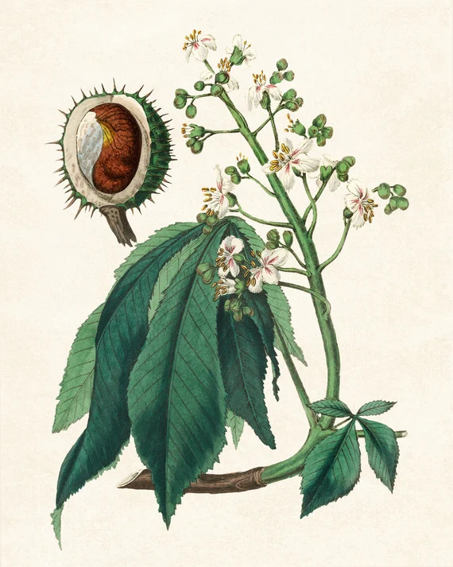
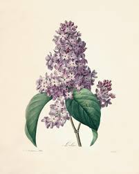
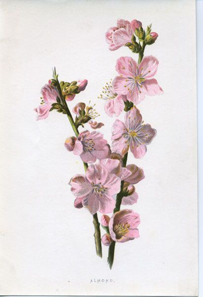
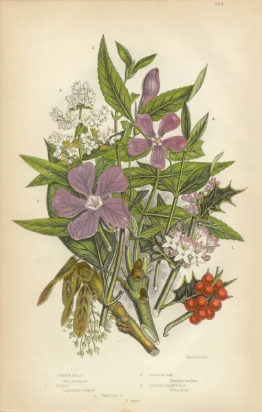
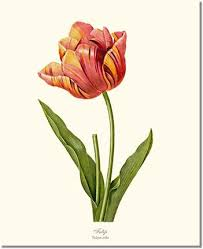
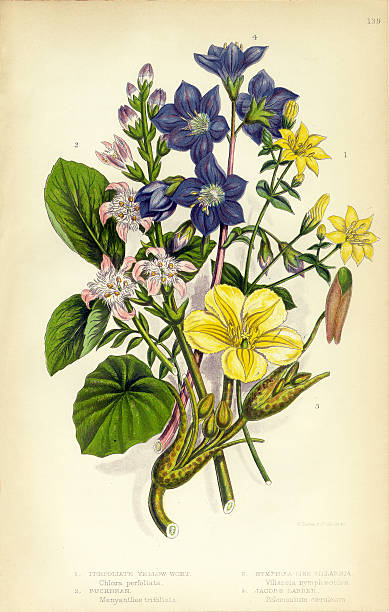

Petals & Prose: Vol. I
Petals & Prose: Vol. I
During the Victorian era, the "Language of Flowers"—or floriography—was a sophisticated social tool. Because direct flirtation or the expression of raw emotion was often frowned upon, a well-curated bouquet (a tussie-mussies) allowed individuals to send coded messages. In the Victorian floral lexicon, every petal held a promise and every leaf a warning. Before you gift a stem, ensure you speak the right language. Some of the most famous examples would be:

"Though humble in stature, I find my greatest beauty in being of constant service to the earth." It means utility: You are practical, reliable, and useful to have around.

"My branches bow low to the stream, heavy with the weight of a sorrow that finds no words." Melancholy: I am mourning or feeling deeply sad and discouraged.

"I adorn the grandest avenues, a testament to the opulence and gilded comfort of a life well-favored." Luxury: This represents wealth, high living, and social status.

"In the soft purple of my petals, the heart feels the very first trembling stirrings of an unknown devotion." First Emotion of Love: I'm starting to fall for you for the very first time.

"I bloom in the biting chill, a reckless spirit that rushes toward the sun without a thought for the frost." Heedlessness: Acting too quickly or being thoughtless/reckless.

"Like a pressed leaf in a diary, I keep the fragrance of our shared yesterdays forever blue and bright." Sweet Memories: I am thinking fondly of the time we spent together.

"I stand tall and bold, my crimson cup overflowing with the secret I can no longer hide: I love you." Declaration of Love: I'm officially telling you that I love you.

"Disturb not the water, for here the soul may finally find its quiet harbor and a long-sought rest." Calmness and Repose: Finding peace, quiet, and a moment to relax.
A Victorian Tip: The way a flower was presented mattered as much as the bloom itself. If the flowers were given with the right hand, they meant "Yes"; with the left hand, they meant "No." If held upside down, the meaning was reversed!